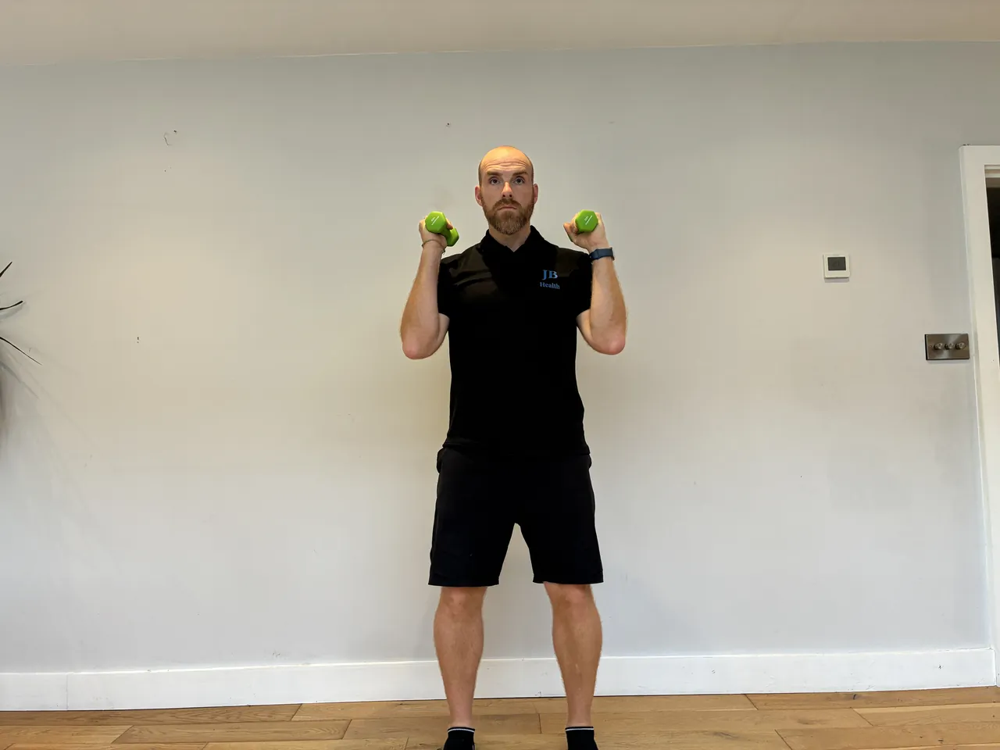
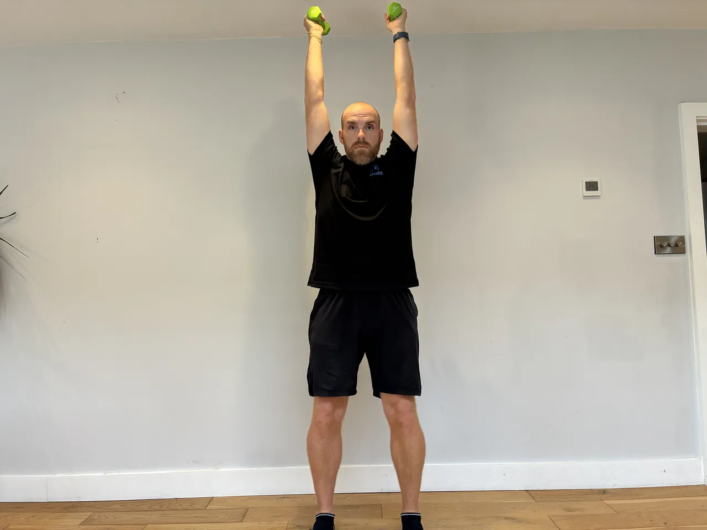

Start: Hold a kettlebell or dumbbell vertically at chest height with both hands.
Movement: Squat down, pushing knees apart with elbows at the bottom. Stand fully.
Focus: Keep chest tall throughout. Keep elbows inside your knees at the bottom.
Start: Stand tall holding the bar at hip height with a shoulder-width grip. Maintain a very slight knee bend — much less than a regular deadlift.
Movement: Hinge your hips back and lower the bar down your legs as far as your flexibility allows. Drive your hips forward to return.
Focus: Keep your back flat throughout. The minimal knee bend maximises the hamstring stretch at the bottom.
Start: Stand to the side of a high box holding a dumbbell.
Movement: Step up laterally onto the high box driving through your heel to stand. Step back down under control.
Focus: Place your full heel on the box before driving up. Control the descent completely.
Start: Stand facing a low cable machine with feet shoulder-width apart and soft knees.
Movement: Pull the handle toward your lower abdomen in a row motion. Return under control.
Focus: Standing adds a core stability and balance demand. Resist being pulled forward as you return.


Start: Stand tall with dumbbells at shoulder height, palms facing forward.
Movement: Press both dumbbells directly overhead to full arm extension without compensating through your lower back. Lower to shoulder height.
Focus: Don't lean back or arch your lower back as you press. Core braced throughout.
Start: Set up as for a band monster walk with band above knees.
Movement: Step diagonally forward and to the side, alternating directions.
Focus: Step at 45° angles, alternating directions. Feel your hip stabilisers working in multiple planes.
Start: Set up in a full stacked side plank.
Movement: Slowly lower hip toward floor without touching it. Raise back to start position.
Focus: Control the movement — no collapsing at bottom. Brace your obliques.
Start: Establish a controlled single leg stance with eyes open first. Soft knee bend, tall spine.
Movement: Once you have solid eyes-open control, close your eyes and hold balance. Open if needed to reset. Build duration progressively.
Focus: Closing your eyes dramatically increases proprioceptive demand by removing the visual cue. Master eyes-open first.
Start: Stand tall with good posture.
Movement: Take long step forward, lower into lunge, drive through front heel into next lunge.
Focus: Maintain tall spine throughout. Keep a long stride — don't shuffle.
Start: Lie on your back with both heels on the Swiss ball and hips raised off the floor.
Movement: Bend your knees to roll the ball toward your glutes. Straighten your legs to return. Hips stay raised throughout.
Focus: Keep your hips elevated throughout. Feel both your hamstrings and hip extensors working.
Start: Upper back on bench, bar across hips. One foot flat on the floor, the other raised.
Movement: Drive through your planted foot to full hip extension. Keep your hips level throughout.
Focus: Single leg thrust maximises glute activation on the working side. Feel it working hard.
Start: Hold a kettlebell and stand on edge of a step on one leg.
Movement: Rise as high as possible on the calf. Progress load when 3x15 is pain-free.
Focus: Lower your heel slowly below the step to full stretch. Feel the Achilles lengthening.
Start: Place one knee and hand on a bench. Hold dumbbell in other hand, arm hanging straight down.
Movement: Row dumbbell up toward ceiling. Lower under control — don't let weight drop.
Focus: Drive elbow directly back, squeeze shoulder blade at top.
Start: Set up in bird-dog position holding a light dumbbell in extending arm.
Movement: Extend arm forward and opposite leg behind simultaneously. No momentum.
Focus: Added weight increases anti-rotation challenge. Slow, controlled movement.
Start: Step onto the balance board with one foot centred.
Movement: Establish balance with small controlled movements before attempting to hold still.
Focus: Fix your gaze ahead, maintain a slight knee bend. Master double leg balance board first before progressing here.